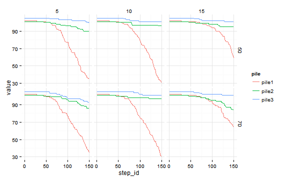

Ants
The following example is using Ants model (Wilensky 1997) to show simple parameter sets definition and parameter mapping.
When parameters (param_values) are defined as a list of value vecors, parameter sets are constructed as combination of all possible parameter value combination what is called “full factorial design”. In practice it is feasible with few parameters and small number of factors for each parameter. See sampling methods for advanced usage of param_values.
The mapping element takes care of mapping between R names and NetLogo variables. NetLogo identifiers may contain any Unicode letter or digit and the following ASCII characters:
.?=*!<>:#+/%$_^'&-
It is not impossible to define such variables and column names in R but using them is somehow inelegant.
experiment <- nl_experiment(
model_file = file.path(nl_netlogo_path(),
"models/Sample Models/Biology/Ants.nlogo"),
iterations = 150,
step_measures = measures(
pile1 = "sum [food] of patches with [pcolor = cyan]",
pile2 = "sum [food] of patches with [pcolor = sky]",
pile3 = "sum [food] of patches with [pcolor = blue]"
),
param_values = list(
population = 125,
diffusion_rate = c(50, 70),
evaporation_rate = c(5, 10, 15)
),
mapping = c(
diffusion_rate = "diffusion-rate",
evaporation_rate = "evaporation-rate"
),
random_seed = 2,
export_view = TRUE
)results <- nl_run(experiment) nl_show_views_grid(results,
x_param = "evaporation_rate",
y_param = "diffusion_rate")

library(tidyr)
dat <- nl_get_step_result(results)
dat <- tidyr::gather(dat, pile, value, pile1, pile2, pile3)library(ggplot2)
ggplot(dat, aes(x = step_id, y = value, color = pile) ) +
geom_line() +
facet_grid(diffusion_rate ~ evaporation_rate) +
theme_minimal()